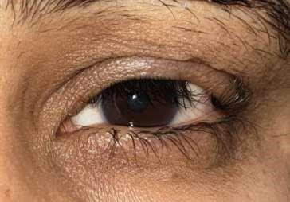
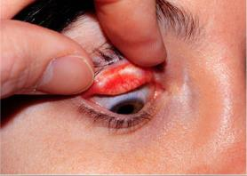

Part I · Entropion
2) Cicatricial entropion
Causes
As that of mal-directed lashes — any cicatrizing disease of the conjunctiva or lid margin:
- Trachoma (the commonest cause in Egypt).
- Ulcerative blepharitis.
- Trauma and chemical burns.
- Ocular cicatricial pemphigoid and Stevens Johnson disease.
Treatment
Mainly surgical.
N.B. Cicatricial entropion may affect both lids, with scarring of the conjunctiva and deformity of the tarsus (shortage of the posterior lid lamella).

